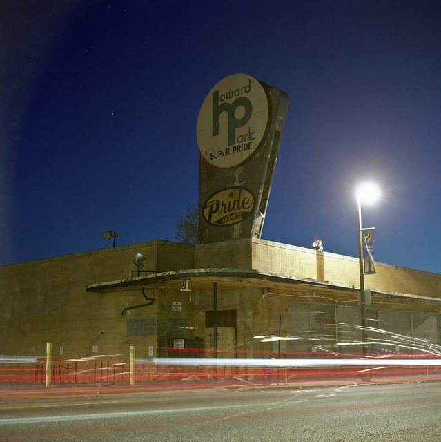

![]()

I’ve been spending some time worrying over issues of transparency and participation in public humanities projects like historic designations and other writing about neighborhood history. Instead of hiding my work until I complete the “finished product” - whether that is a National Register nomination or a walking tour program - I’m interested in making more of my work public, visible and subject to feedback and criticism throughout the process. This idea is inspired in part by the concept of “open notebook science” and I’m curious to see how it works for me as a scholar and practitioner.
At the moment, I’m working on a National Register Historic District Nomination for the neighborhood of Midtown Edmondson. I met last night with a group of neighborhood residents who are volunteering to support the project and provide feedback on the draft nomination. One neighbor recalled the Super Pride location at W.Lafayette Avenue and N. Payson Street and asked that a history of the store be included. Here is my first draft of a short summary - I’ll likely update the post if I have any corrections or additions:
Super Pride was established by Charles Thurgood Burns (1915-1991) in 1970 when he took over the bankrupt “Super Jet Market” located on East Chase Street. Renaming the business Super Pride, he restored the business to profitability within three years despite the challenge of some food companies that refused to work with a black-owned store. Burns had started in the grocery business around 1921 delivering groceries for the small store his grandfather owned on Dolphin Street. He sold vegetables, produce and fish out of the back of a cart during high school and college then later became the co-owner of Hilton Court Chain of Ethical Pharmacies - a business that according to Burns’ obituary, “catered to the needs of black consumers at a time when white-owned businesses ignored them.”
Between 1970 and 1990, Super Pride grew to seven locations, employing more than 400 people, and making over $43 million in annual sales. Under Burns’ leadership, Super Pride sponsored Black History Month activities and supported the Arena Players. By the late 1990s, however, the business struggled to compete against national chains and the city’s shrinking population. In the fall of 2000, Super Pride closed all eight of its locations and, in November, held an auction to liquidate the stores and their remaining equipment to satisfy creditors.
Sources: Charles T. Burns dies founder of Super Pride, April 10, 1991, Lynda Robinson, The Baltimore Sun. Super Pride reaches the end: Fixtures, equipment of failed chain being auctioned Monday, November 8, 2000, Gus G. Sentementes, The Baltimore Sun.
Reuse
Citation
@online{pousson2014,
author = {Pousson, Eli},
title = {Super {Pride}},
date = {2014-07-22},
url = {https://elipousson.github.io/posts/2014-07-22-super-pride},
langid = {en}
}